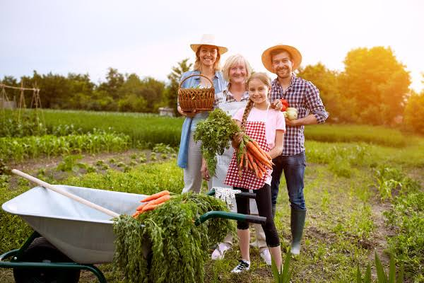

A agricultura familiar é um tipo de produção agrícola que é gerida e operada por uma família e depende principalmente do trabalho dos membros familiares, incluindo homens e mulheres. Esse tipo de agricultura é geralmente realizado em pequenas propriedades e é fundamental para a segurança alimentar, a economia rural e a sustentabilidade ambiental.
Características da Agricultura Familiar:
- Gestão Familiar: A gestão familiar na agricultura familiar refere-se ao controle e à administração da propriedade agrícola feitos pela própria família. As decisões sobre o que plantar, como produzir e como gerir os recursos são tomadas coletivamente pelos membros da família, que também participam ativamente do trabalho na terra. Isso garante que a produção seja adaptada às necessidades e capacidades da família, promovendo sua sustentabilidade econômica e social.
- Diversidade de Culturas: A diversidade de culturas na agricultura familiar significa o cultivo de diferentes tipos de plantas e a criação de diversos animais em uma mesma propriedade. Isso ajuda a aumentar a segurança alimentar, reduzir riscos agrícolas e preservar a biodiversidade local.
- Sustentabilidade: A sustentabilidade na agricultura familiar envolve práticas agrícolas que atendem às necessidades atuais sem comprometer a capacidade das gerações futuras de atenderem às suas próprias necessidades. Isso é alcançado por meio de métodos que promovem a saúde do solo, a conservação dos recursos naturais, e a resiliência econômica das famílias agrícolas.
- Flexibilidade Econômica: A flexibilidade econômica na agricultura familiar refere-se à capacidade das famílias agrícolas de se adaptarem a mudanças nas condições de mercado, clima e outros fatores externos para garantir sua sobrevivência e prosperidade econômica. Essa flexibilidade é fundamental para a resiliência e a sustentabilidade das famílias agrícolas.